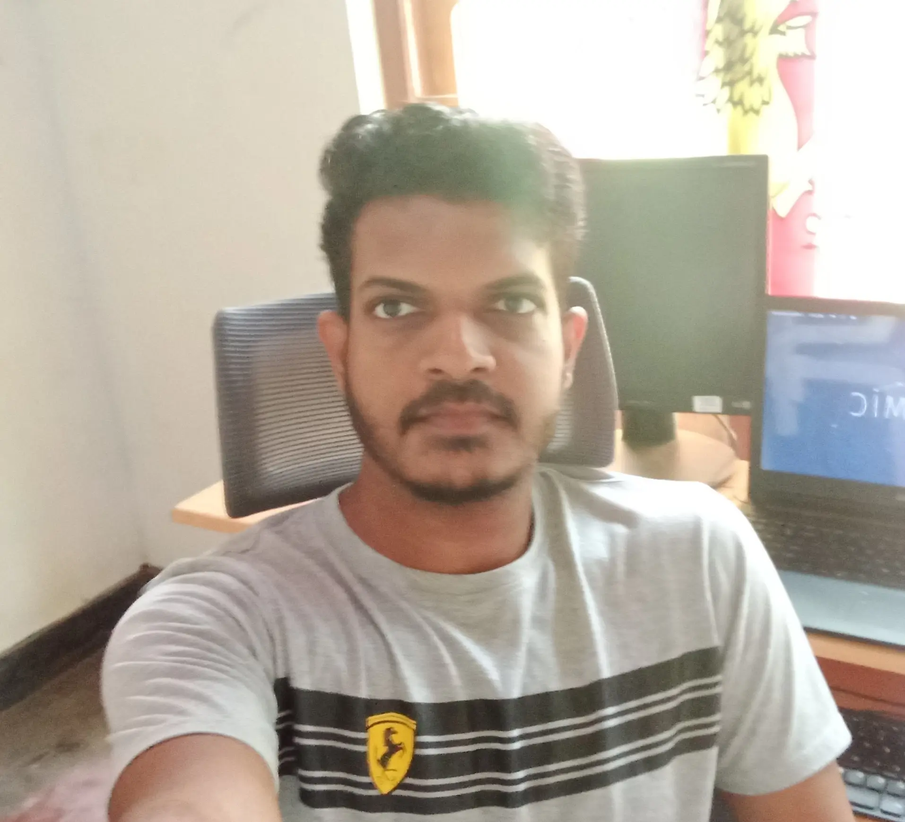

<section class="about  flex flex-col lg:flex-row h-screen">
    <div class=" container mx-auto flex p-4 flex-col ">
        
        <p class="basis-1/4  capitalize font-megrim text-5xl lg:text-6xl">about</p>

        <div class="basis-3/4 flex flex-col lg:flex-row">

            <div class="container  flex justify-center lg:justify-end p-4 lg:p-10">
                
            </div>

            <div class="flex flex-col ">
                <p> I describe myself as a self-learning, passionate developer who loves coding and designing. Coding has been my passion since the days when I started working with computers.</p>
                <p>From there, my fascination with technology led me to delve deeper into the intricate world of software development.</p>
                <span class="uppercase">Tech stack</span>
                <div class="tec-stack flex flex-row flex-wrap">
                    
                    
                    
                    
                    
                    
                    
                    
                </div>
            </div>
        

        </div>

        
    </div>
</section>
